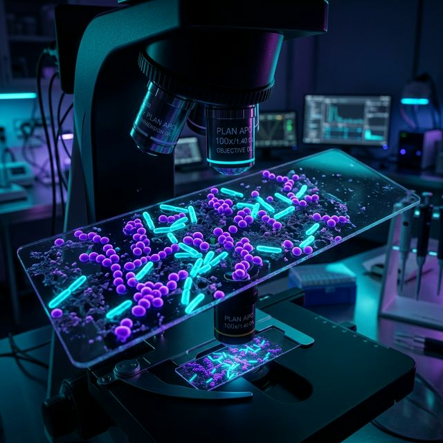

Exploring the unseen. Passionate about clinical diagnostics, pathogen detection, and sustainable biotechnology.
I’m a Microbiology graduate from the University of Calicut (SIAS). My focus lies at the intersection of classical microbiological techniques and cutting-edge molecular diagnostics.
With hands-on training from UniBiosys Biotech Research Labs and certifications in analytical microbiology from NABL-accredited facilities, I strive for precision and sterility in every procedure.
Clinical Diagnostics · Molecular Biology · Food Safety
Conducted microbial analysis of food samples, extracted DNA/RNA for PCR, executed standard colony isolation schemes, and enforced strict NABL safety standards.
Developed expertise in microbial physiology, genetics, biochemistry, and applied food microbiology. Conducted thesis defense on simultaneous saccharification and fermentation.
Real-world applications of protocols and research methodologies.

Currently seeking entry-level, internship, or research roles where precision and continuous learning are valued.